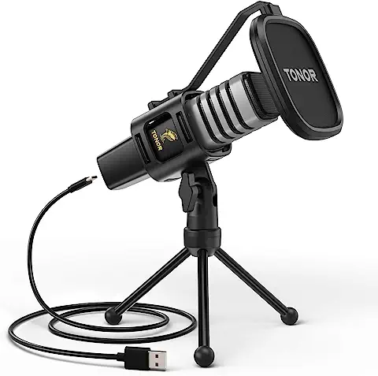
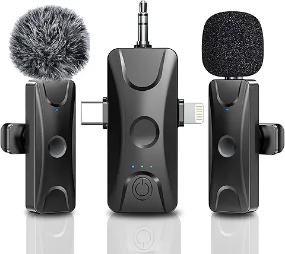
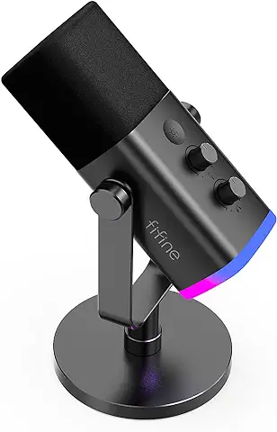
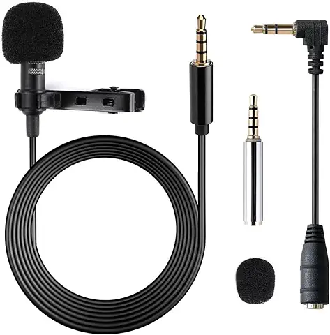
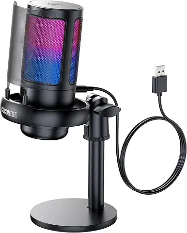

Top Mikrofon-Angebote unter 30€!
Angebot 1: USB-Kondensatormikrofon für 29,99€

Perfekt für Podcasts und Gesangsaufnahmen. Dieses Mikrofon bietet eine klare Klangqualität bei einem unschlagbaren Preis.
Preis: 29,99€
Technische Daten:
- Typ: Kondensatormikrofon
- Frequenzbereich: 20 Hz - 20 kHz
- Empfindlichkeit: -38 dB ± 2 dB
- Verbindung: USB 2.0
- Impedanz: 100Ω
Jetzt Kaufen
Angebot 2: Lavaliermikrofon für 19,99€

Diskret und effizient. Ideal für Interviews und Videoaufnahmen. Kompatibel mit Smartphones und Kameras.
Preis: 19,99€
Technische Daten:
- Typ: Lavaliermikrofon
- Frequenzbereich: 50 Hz - 16 kHz
- Empfindlichkeit: -32 dB ± 3 dB
- Verbindung: 3,5mm Klinke
- Kabellänge: 1,5 Meter
Jetzt Kaufen
Angebot 3: Dynamisches Mikrofon für 24,99€

Robust und vielseitig. Perfekt für Bühnenauftritte und Sprachaufnahmen.
Preis: 24,99€
Technische Daten:
- Typ: Dynamisches Mikrofon
- Frequenzbereich: 50 Hz - 15 kHz
- Empfindlichkeit: -54 dB ± 3 dB
- Verbindung: XLR
- Impedanz: 600Ω
Jetzt Kaufen
Angebot 4: Clip-On Mikrofon für 14,99€

Klein und handlich. Einfach an Kleidung befestigen und sofort mit der Aufnahme loslegen.
Preis: 14,99€
Technische Daten:
- Typ: Clip-On Mikrofon
- Frequenzbereich: 30 Hz - 18 kHz
- Empfindlichkeit: -40 dB ± 2 dB
- Verbindung: 3,5mm Klinke
- Kabellänge: 1,2 Meter
Jetzt Kaufen
Angebot 5: Tischmikrofon für 27,99€

Ideal für Home-Office und Online-Konferenzen. Dieses Tischmikrofon liefert klare Sprachqualität für jeden Anlass.
Preis: 27,99€
Technische Daten:
- Typ: Tischmikrofon
- Frequenzbereich: 40 Hz - 18 kHz
- Empfindlichkeit: -36 dB ± 3 dB
- Verbindung: USB 2.0
- Rauschabstand: 78 dB
Jetzt Kaufen